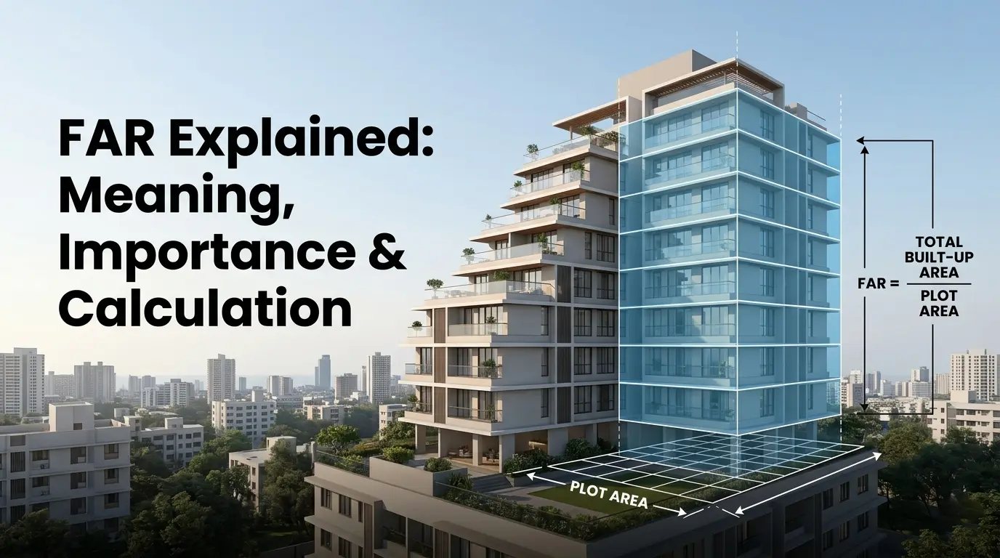

Floor Area Ratio (FAR): Meaning, Importance & Calculation
Category: Blog • April 20, 2026
Walk into any property conversation in Mumbai and within minutes, someone mentions FSI. Or FAR. Sometimes both, almost always without explaining what the FAR means in real estate. If you have been nodding along, you are not alone. Most homebuyers spend months comparing floor plans and locations but never quite get around to understanding FAR in real estate — the one number that quietly shapes everything about a building: how tall it goes, how many flats it holds, how much open space remains, and whether it is even legally built.
What Is FAR? The Full Form and What It Tells You?
FAR full form is Floor Area Ratio. FAR in real estate is the ratio of the total built-up area of a building across all floors to the size of the plot it stands on.
FAR = Total Built-Up Area (all floors) ÷ Plot Area
If a plot measures 10,000 sq ft and the permissible FAR is 2.0, the developer can build a maximum of 20,000 sq ft of floor space across the entire project, spread across however many floors they choose. In Mumbai, you will almost always hear this called FSI i.e. Floor Space Index. Same concept, different name. FAR full form in real estate is Floor Area Ratio and is the internationally used term; FSI is the word the BMC uses in its official regulations. Both mean exactly the same thing.
What Does FAR Area Mean?
When people ask what is built-up area in a flat context or encounter the phrase FAR area in a project document, they are asking the same underlying question: how much can actually be built here? FAR area means the total permissible floor space that can be constructed on a specific plot. So a plot of 8,000 sq ft with a FAR of 2.5 has a FAR area of 20,000 sq ft — that is the builder's ceiling.
What typically counts towards FAR area: all habitable floors, attached balconies and corridors, and mezzanine floors where applicable. What generally does not count: underground parking areas, common staircases and lift shafts, and open-to-sky terraces. Inclusions vary under DCPR 2034, so always verify with the sanctioned building plan.
Understanding what a FAR area means is especially important when comparing two projects in the same location. A building that has used 100% of its permissible FAR will feel denser than one where the developer chose to leave open space by not exhausting the full entitlement.
FAR Calculation: How Is Floor Area Ratio Calculated?
The FAR calculation uses a straightforward formula. To understand how FAR is calculated, you only need two numbers: total built-up area and plot area.
FAR Calculation Formula: FAR = Total Built-Up Area ÷ Plot Area
Both figures are measured in the same unit — square feet or square metres. Here is a floor area ratio calculation example that shows how it works in practice:
A developer acquires a 12,000 sq ft plot in Kandivali. Permissible FSI under DCPR 2034 for that zone is 2.5.
Maximum buildable area = 12,000 × 2.5 = 30,000 sq ft
If the average flat size is around 700 sq ft carpet, accounting for common areas, that translates to roughly 35 to 40 units across the building. Here is another floor area ratio calculation example showing how Premium FSI changes the picture: if the developer pays for additional Premium FSI and pushes effective FAR to 3.0, the buildable area rises to 36,000 sq ft — six thousand additional square feet that could mean several more units and significantly higher project revenue..
Table: FAR vs. Buildable Area on a 10,000 sq ft plot. Numbers are indicative.
Why FAR in Real Estate Matters More in Mumbai?
Mumbai is a city of roughly 22 million people packed into a peninsula that cannot expand outward the way Delhi or Bengaluru can. For years, Mumbai's FSI sat at a very low 1.33 — among the lowest of any major city globally. Urban economists argued this constrained housing supply and pushed prices high. Eventually, the Maharashtra government agreed and revised the permissible FSI for residential buildings upward to 3, and up to 5 for commercial developments under DCPR 2034. That single policy shift changed the economics of development city-wide.
For a homebuyer, FAR in real estate has three direct implications. First, it tells you about the legal standing of the building. A structure built beyond permissible FAR is in violation of BMC regulations — and without an Occupancy Certificate, you cannot legally move in or easily sell later. Second, it shapes how comfortable your neighbourhood feels. Higher FAR on a small plot means more units, more residents, and less open compound space. Third, it drives redevelopment feasibility — higher permissible FAR is what makes it financially viable for a developer to give older-society residents larger upgraded homes at no cost.
FAR in Construction: How It Works on the Ground?
FAR in construction is not just a planning concept — it is a live regulatory constraint at every stage of a project's approval. Before a single brick is laid, the developer submits building plans to the BMC showing the total proposed floor area across all floors. The BMC verifies that this total does not exceed the permissible FAR for that zone.
The Commencement Certificate (CC) — the authorisation to begin construction — is only issued once the plans pass FAR scrutiny. FAR in construction also governs what happens at the end: the Occupancy Certificate (OC) is granted when the completed building matches the sanctioned plan. Any construction beyond the approved FAR is illegal and can result in the BMC refusing the OC, issuing stop-work notices, or in serious cases ordering demolition of excess floors.
FAR/FSI Limits Across Mumbai — Zone by Zone
Mumbai's FAR norms are set out in DCPR 2034, administered by the BMC. The limits vary by zone and road width:
Source: DCPR 2034, BMC. Figures are indicative and subject to revision.
South Mumbai retains a conservative 1.33 because its infrastructure simply cannot absorb more density. The suburbs — Kandivali, Borivali, Mulund, and Andheri — now operate under FSI up to 3.0 since the DCPR 2034 revision. TOD zones near Mumbai's metro corridors are where some of the most interesting development is happening, with FSI reaching 4.0 to 5.0 in areas around Dahisar, Goregaon, Andheri, and Ghatkopar.
FAR vs FSI vs Carpet Area — Clearing Up the Confusion
What is FAR in real estate versus what is FSI — and how do both differ from carpet area? Here is the plain-English breakdown:
Always ask for the RERA carpet area when evaluating any project. That is the number that tells you how much usable space you are actually paying for.
What to Verify Before You Buy? A FAR Compliance Checklist
Understanding FAR meaning in real estate is most valuable when it translates into specific questions you ask before signing. Here is what to check:
• Confirm RERA registration on MahaRERA (maharera.mahaonline.gov.in) — the sanctioned plan shows the approved FAR
• Ask what FAR the plot carries and whether Premium FSI has been used — if so, confirm charges are paid
• Check whether TDR is part of the FAR calculation and verify it is valid in the BMC-sanctioned plan
• For ready-to-move properties, verify the Occupancy Certificate (OC) confirming FAR compliance
• Insist that the RERA carpet area is clearly stated in the sale agreement
Look at the site plan — the ratio of open space to built area tells you whether the developer has used FAR thoughtfully or exhausted every last square foot.
Does Higher FAR Always Mean a Better Project?
Not necessarily. This is one of the most common misunderstandings around what is FAR in real estate. Higher FAR means more can be built on a plot — but it does not guarantee a better living experience. A developer who exhausts every last square foot of permissible FAR on a small plot will deliver a building, but the compound will be tight, the greenery minimal, and the density high.
Some of the best residential projects in Mumbai are built by developers who choose not to use their full FAR entitlement. They leave more open space, keep unit counts lower, and invest in landscape quality. When comparing projects, look at the site plan: the ratio of open space to built area tells you a great deal about the builder's priorities and what life will feel like once the building is fully occupied.
Frequently Asked Questions: Floor Area Ratio (FAR)
What is FAR full form in real estate?
FAR full form in real estate is Floor Area Ratio. It is the ratio of a building's total built-up area across all floors to the area of the plot it stands on. FAR full form in real estate is the same as FSI full form — Floor Space Index — which is the Mumbai-specific term for the identical concept.
What does FAR area mean in a flat or property context?
FAR area means the total permissible built-up floor space on a given plot, calculated as FAR multiplied by the plot area. If a plot is 10,000 sq ft and the FAR is 2.5, the FAR area means a maximum of 25,000 sq ft can be built across all floors. Beyond this ceiling, any construction would be in violation of planning regulations.
What is FAR in real estate, and how is it different from FSI?
What is FAR in real estate? It is the ratio of total floor area to plot area, used to govern how much can be built. FAR in real estate equals FSI in function — the difference is only in name and regional usage. FAR is expressed as a decimal (e.g., 2.5); FSI can be expressed as a percentage (e.g., 250%). Both describe the same permitted development density.
What is FAR meaning in real estate for a homebuyer specifically?
FAR meaning in real estate for a buyer comes down to three things: legal compliance (is the building within its approved FAR?), density (how many units are on the plot and how much open space is left?), and value (does the project's use of FAR reflect quality over quantity?). FAR meaning in real estate is not just a technical metric — it is a direct indicator of how liveable and legally sound a project is.
How is floor area ratio calculated?
Floor Area Ratio is calculated as FAR = Total Built-Up Area ÷ Plot Area.
What is FAR in construction at the project approval stage?
FAR in construction is the primary metric the BMC checks before issuing a Commencement Certificate (CC). The developer submits a building plan showing the total proposed floor area. If the plan exceeds the permissible FAR for that zone, the plan is rejected. FAR in construction is also verified at the end — the Occupancy Certificate (OC) is only granted if the completed structure matches the FAR-compliant sanctioned plan.
What is the current permissible FAR/FSI in Mumbai?
Under DCPR 2034, the basic FSI (FAR) for residential buildings in Mumbai's suburbs is up to 2.5, with a maximum of 3.0 when Premium FSI and TDR are included. South Mumbai retains 1.33 base FAR. Redevelopment projects can access up to 4.0 FAR, and Transit Oriented Development zones near metro stations can reach 4.0 to 5.0. Commercial developments may go up to 5.0 FAR in eligible zones.
What is Premium FSI and how does it relate to FAR calculation?
Premium FSI — also called Fungible Compensatory Area (FCA) — lets developers exceed the basic FAR by paying charges to the BMC. In FAR calculation terms, it increases the effective permitted FAR beyond the base limit. These charges are calculated as a percentage of the ready reckoner land value. Homes built using Premium FSI are entirely legal, provided the developer has paid the charges, and the additional area is included in the sanctioned plan.
What is TDR and how does it affect FAR?
TDR (Transfer of Development Rights) is a mechanism that allows unused development rights from one plot to be used on another. In FAR calculation terms, TDR increases the effective permissible FAR on the receiving plot beyond its basic limit. It is a legal and commonly used tool in Mumbai's suburban real estate development. If TDR has been used in a project you are evaluating, confirm it is valid and included in the BMC-sanctioned plan.
Does higher FAR always mean a better property?
No. Higher FAR in real estate means more floor area can be built, but a developer who maximises every square foot of FAR on a small plot may deliver high density with minimal open space.
How does FAR affect property resale value?
Higher permissible FAR increases a plot's development potential and raises land value, which feeds into apartment prices. FAR compliance is critical for resale: a property built within its approved FAR, with a valid OC and RERA registration, is significantly easier to sell and commands a better price.
What happens if a building exceeds its permissible FAR?
Construction beyond the approved FAR is a regulatory violation. The BMC can refuse the Occupancy Certificate (OC), issue stop-work notices, and in serious cases order demolition of the excess construction.
Can FAR rules change after I buy?
FAR norms can and do change — Mumbai has revised FSI upward multiple times, most recently under DCPR 2034. Your approved construction rights at the time of the building's approval remain protected. If FAR increases in your area after purchase, it typically benefits you by increasing the redevelopment potential of your building, which can lead to higher resale or redevelopment value over time.
How is FAR different from carpet area or built-up area?
FAR in real estate operates at the plot level — it governs how much a developer can build in total. Carpet area and built-up area operate at the individual flat level. FAR determines the building's overall scale; carpet area determines the size of your specific home within it. When buying a flat, FAR tells you about the building's compliance; RERA carpet area tells you what you are actually paying for.
Is FAR the same across all Indian cities?
No. FAR in real estate varies significantly by city. Mumbai's suburban residential FAR is up to 3.0 under DCPR 2034. Bengaluru's FAR ranges from 1.5 to 3.25, depending on road width. Delhi has different norms under its Master Plan. Each municipal authority sets its own FAR framework. Always check the applicable FAR regulations for the specific city and zone you are buying in.
Popular Searches:
Typology - 1 BHK for Sale in Mumbai | 2 BHK for Sale in Mumbai | 3 BHK for Sale in Mumbai | 4 BHK for Sale in Mumbai
Locations - Properties in Parel | Properties in Dadar East | Properties in Mulund | Properties in Chembur | Properties in Kandivali | Properties in Borivali | Properties in Malad | Properties in Byculla | Properties in Kurla | Properties in Santacruz West | Properties in Ghatkopar | Properties in Sion | Properties in Matunga West | Properties Near BKC
Property Type - Sea Facing Apartments in Mumbai | Residential Properties in Mumbai | Commercial Properties in Mumbai